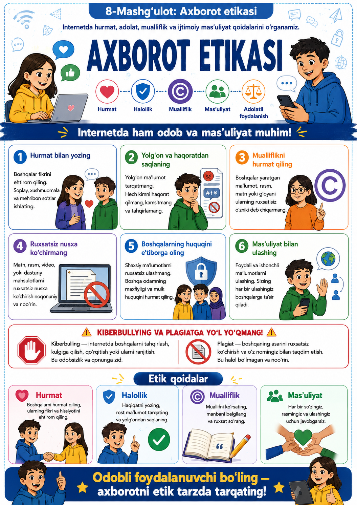

Dars jarayoni
45 daqiqalik namunaviy dars taqsimoti
Tashkiliy qism
Salomlashish, davomat, mavzu va dars maqsadini e’lon qilish.
Motivatsiya
“Internetda ham odob kerakmi?” savoli asosida o‘quvchilar bilan qisqa suhbat tashkil etiladi.
Nazariy tushuntirish
Axborot etikasi, internetdagi xulq-atvor, mualliflik va ijtimoiy mas’uliyat tushunchalari izohlanadi.
Amaliy mashq
Guruhlarda turli vaziyatlar tahlil qilinadi: izoh yozish, rasm ulashish, manba ko‘rsatish va mualliflikka hurmat masalalari muhokama qilinadi.
Mustahkamlash
“To‘g‘ri yoki noto‘g‘ri xatti-harakat?” o‘yini orqali mavzu mustahkamlanadi.
Baholash va uyga vazifa
Testlar, yozma topshiriqlar va uyga vazifa beriladi.
Dars pasporti
Darsning qisqacha reja-ma’lumoti
Dars maqsadi
O‘quvchilarda axborotdan foydalanish va uni tarqatishda hurmat, adolat, mualliflikka sodiqlik hamda ijtimoiy mas’uliyat tamoyillarini shakllantirish.
Jihozlar
Kompyuter, proyektor, taqdimot, etik vaziyatlar kartochkalari, internet postlari namunasi, refleksiya varaqalari va test topshiriqlari.
O‘quv maqsadlari
Dars yakunida o‘quvchi quyidagilarni bajara oladi:
Biladi
Axborot etikasi, mualliflik huquqi, internet odobi va ijtimoiy mas’uliyat tushunchalarini aytib bera oladi.
Tushunadi
Internetdagi har bir xabar, izoh va ulashuv boshqa odamlarga ta’sir ko‘rsatishini tushunadi.
Qo‘llaydi
Axborotdan foydalanishda manbani ko‘rsatadi, boshqalarning huquqini hurmat qiladi va etik qoidalarga rioya etadi.
Nazariy qism
Axborot etikasi nima va nega muhim?
Axborot etikasi nima?
Axborot etikasi — bu axborotni izlash, yaratish, ulashish va undan foydalanishda axloqiy me’yorlarga amal qilish, ya’ni rostgo‘ylik, hurmat, adolat, javobgarlik va mualliflik huquqiga rioya etish tamoyillaridir.
Nega kerak?
Chunki internetdagi noto‘g‘ri so‘z, haqoratli izoh, manbasiz ulashilgan material yoki birovning mehnatini o‘ziniki qilib ko‘rsatish boshqalarga zarar yetkazishi, nizolar va ishonchsizlikni keltirib chiqarishi mumkin.
| Tushuncha | Qisqa izoh |
|---|---|
| Hurmat | Boshqalarning fikri, sha’ni va shaxsiyatiga ehtiyotkorlik bilan munosabatda bo‘lish. |
| Adolat | Axborotni buzmasdan, bo‘rttirmasdan va bir tomonlama ko‘rsatmasdan yondashish. |
| Mualliflik huquqi | Boshqa muallif yaratgan matn, rasm, video yoki g‘oyaga egalik huquqini tan olish va manbani ko‘rsatish. |
| Rostgo‘ylik | Yolg‘on axborot tarqatmaslik, manba va faktlarni tekshirib ishlatish. |
| Ijtimoiy mas’uliyat | Axborot tarqatishda uning jamiyatga va odamlarga ta’sirini hisobga olish. |
| Netiket | Internetdagi odob-axloq qoidalari majmui. |
Axborot etikasining 6 asosiy qoidasi
Har bir o‘quvchi bilishi kerak bo‘lgan etik tamoyillar
Hurmat bilan yozing
Izoh va xabarlarda boshqalarni kamsituvchi yoki haqoratli so‘zlardan foydalanmang.
Manbani ko‘rsating
Boshqalarning matni, rasmi yoki g‘oyasini ishlatsangiz, albatta muallifini ko‘rsating.
Yolg‘on xabar tarqatmang
Axborotni tekshirmasdan ulashmang, fakt va haqiqatga amal qiling.
Shaxsiy hayotni hurmat qiling
Birovning rasm, video yoki ma’lumotini ruxsatsiz joylamang.
Adolatli bo‘ling
Biror voqeani bir tomonlama emas, xolis va muvozanatli ko‘rib chiqing.
Mas’uliyatni his eting
Har bir ulashuv va izoh jamiyatga ta’sir ko‘rsatishini unutmang.
Axborot etikasi buziladigan holatlar
Quyidagi vaziyatlar o‘quvchilar uchun muhim ogohlantirish vazifasini bajaradi:
Haqoratli izoh
Birovni mazax qilish, kamsitish yoki haqoratlash internet odobiga zid hisoblanadi.
Plagiat
Boshqalarning matn yoki g‘oyasini manbasiz o‘zlashtirish axloqiy va ilmiy jihatdan noto‘g‘ri.
Ruxsatsiz ulashish
Boshqaning rasmi, videosi yoki shaxsiy ma’lumotini iznsiz joylash etikaga zid.
Yolg‘on yoki chalg‘ituvchi xabar
Tekshirilmagan ma’lumotni tarqatish boshqalarning noto‘g‘ri fikrga borishiga sabab bo‘ladi.
To‘g‘ri xulq-atvor
- Boshqa fikrga hurmat bilan yondashish
- Muallif va manbani ko‘rsatish
- Shaxsiy ma’lumotlarni oshkor qilmaslik
- Rost va foydali axborot ulashish
- Adabiy va muloyim tilda yozish
Noto‘g‘ri xulq-atvor
- Kamsituvchi yoki g‘azabli izoh yozish
- “Copy-paste” qilib manba ko‘rsatmaslik
- Boshqalarning ishini o‘ziniki qilib ko‘rsatish
- Shov-shuv uchun yolg‘on ma’lumot tarqatish
- Shaxsiy surat va ma’lumotni ruxsatsiz ulashish
Amaliy topshiriqlar
Maktab o‘quvchilari bilan bajariladigan mashqlar
1-topshiriq: Izohni tahlil qiling
Berilgan internet izohlaridan qaysi biri etik, qaysi biri noetik ekanini ajrating.
2-topshiriq: Manbani ko‘rsating
Bir matn yoki rasm uchun to‘g‘ri manba ko‘rsatish usulini yozing.
3-topshiriq: Plagiatni aniqlang
Matn namunalaridan qaysi biri plagiat ekanini toping va sababini ayting.
4-topshiriq: Shaxsiy hayotni hurmat qiling
Biror kishining rasmi yoki ma’lumotini joylashdan oldin nimalarni hisobga olish kerakligini yozing.
5-topshiriq: Etik qaror
Berilgan vaziyat bo‘yicha eng to‘g‘ri va axloqiy qarorni tanlang.
6-topshiriq: Xulosa
“Internetda axborot etikasi nega kerak?” mavzusida qisqa fikr yozing.
Qo‘shimcha infografika va video ma’lumotlar
Infografika

Infografika');">Video ma’lumot
Tezkor test
Dars yakunida o‘quvchi 3 ta tanlovli test va 2 ta yozma yopiq savol orqali o‘zini tekshiradi
1. Axborot etikasi nimani anglatadi?
2. Boshqa muallif materialidan foydalanganda nima qilish kerak?
3. Birovning ishini manbasiz o‘zlashtirish nima deyiladi?
4. Internetdagi odob-axloq qoidalari majmui nima deyiladi?
Javobni bitta so‘z yoki qisqa ibora bilan yozing.
5. Boshqa muallifning matn yoki g‘oyasini manbasiz o‘zlashtirish nima deyiladi?
Javobni bitta so‘z bilan yozing.
Uyga vazifa
Qisqa va foydali topshiriq
- “Internetda hurmatli muomala qanday bo‘lishi kerak?” mavzusida 5 ta qoida yozing.
- Biror maqola yoki rasmni topib, unga to‘g‘ri manba ko‘rsatish namunasini yozing.
- “Axborot etikasi jamiyat uchun nega muhim?” mavzusida kichik refleksiya tayyorlang.